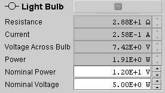
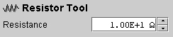
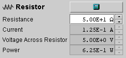
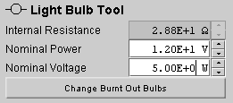
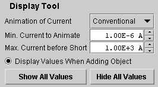
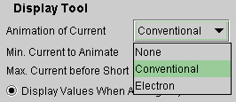

The Selection Tool lets you select any of the circuit elements. To use the tool, select it by clicking on it. Then click on the circuit element to select that element. An information panel below the circuit will display information about the selected circuit element and will allow you to change parameters defining the element.
E.g., if your applet has a circuit with a light bulb, like the circuit shown in the snapshot at the top, and if you click on the light bulb while the Selection Tool is selected, the Tool Information (13) in the snapshot at the top will be replaced by information about the light bulb, as in the following snapshot.

The greyed-out values are values calculated by the applet that cannot be changed directly. The items in the white data fields, Nominal Voltage and Nominal Power in this case, can be changed by entering new values in the data fields (either by typing them or using the up/down arrows next to the data field) and subsequently pressing the Calculator button at the top of the information panel. The button is inactive in the preceding snapshot. It becomes active as soon as a new value is entered into one of the active data fields.
For additional information on how to change the parameters defining a circuit element, see Point 4, Resistor Tool, below.
If you click on a grid point while the Selection Tool is selected, the applet displays the electric potential at this point. In the following snapshot, the top right point in the circuit is selected in this manner. The potential at the selected point can be set to any value you like by by typing a new value in the Potential data entry field or using the up/down arrows next to the data field.


When the Eraser Tool is selected, clicking on any circuit element will delete that circuit element.
When the Wire Tool is selected, one can create a wire segment by clicking with the mouse on a grid point, dragging horizontally or vertically to another grid point, and then releasing the mouse button. Wires cannot be created in a diagonal direction.
Drawing a wire over an existing circuit element, e.g., a light bulb, will replace that circuit element by a wire segment.
Quite generally, if a Tool for drawing a circuit element is selected, then clicking with the mouse between two adjacent grid points will place the circuit element between these grid points and replace whatever other circuit element may already exist there.
The Wire Tool works differently from the other Circuit Element Tools: placing a wire segment between two grid points requires dragging the mouse from one point to the other, not just clicking in the space between the grid points as is required for the other circuit elements.
Note. The resistance of a wire segment between two adjacent grid points is very, very small, but not zero. This resistance cannot be varied by the user.
The Tool Information below the circuit area gives the resistance of a wire segment between two neighboring grid points. See the image at the top which shows the applet with the Wire Tool selected.

When the Resistor Tool is selected, one can place a resistor between any two adjacent grid points by clicking in the space between the grid points. The grid points must be in a horizontal or vertical direction from each other, not in a diagonal direction.
The resistance of the resistor to be placed in the circuit can be set in the Resistor Tool Information panel below the circuit area:

Set the resistance to the value you want by typing the value in the data field or using the up/down scroll arrows to the right of the data field. Then click at the place in the circuit where you want the resistor to be.
To use the up/down scroll arrows, place the cursor in front of the digit you want to change. Then use the arrows.
To change the resistance of a resistor in the circuit, there are two options:
-
select the Resistor Tool , set the resistance
value in the Resistor Tool information panel to the
value you want, and click on the existing resistor;
the existing resistor will be replaced with a
resistor that has the new resistance value;
-
select the Selection Tool , then click on the
resistor whose resistance you want to change, type the
resistance value you want in the Resistance data field
in the Resistor information panel below the circuit
area, and finally click the calculator icon to
implement the new value and to recalculate the circuit.
The following snapshot illustrates the Resistor
Information panel.

Distinguish between the Resistor Tool information panel and the Resistor information panel. The preceding two images illustrate the two panels. You get the former if you select the Resistor Tool and the latter if you select the Selection Tool and then select a resistor.
The steps described here to change a resistance apply correspondingly to other circuit elements and will not be repeated below when those elements are described.
For information on the values displayed in the Resistor information panel, see Point 7, Light Bulb Tool, below which displays the same kinds of values.
When the Battery Tool is selected, one can place a battery between any two horizontally or vertically adjacent grid points by clicking in the space between the grid points.
The Battery Tool information panel below the circuit area has two data entry fields for setting the emf and internal resistance of the battery. Set these to the values you want. Then insert the battery in the circuit.
After a battery has been inserted into a circuit, you can select it after clicking the Selection Tool. The Battery information panel will be displayed at the bottom. This panel also lets you change the internal resistance and emf of the battery. You need to click the Calculator button at the top of the panel to implement the values.
Changing the parameters of a battery already existing in the circuit is accomplished like changing the resistance of a resistor. See under Resistor Tool above.
Both the Battery Tool information panel and the Battery information panel have a Switch Polarity button. Clicking that will switch the battery's polarity. In the case of the button on the Battery Tool information panel, clicking this button will have an effect only after inserting the next battery into the circuit. This is consistent with the way all changed settings in a Tool information panel are implemented.

When the Switch Tool is selected, one can place either an open or a closed switch into the circuit, depending on whether the Open-Switch radio button in the Switch Tool information panel is selected or not.
Just selecting or unselecting the Open-Switch radio button in the Switch Tool information panel after a switch has been placed in the circuit will not affect the state of the switch. Only when a new switch is placed in the circuit will the state of the radio button have an effect.
To change the state of an existing switch, proceed in analogy to changing the resistance of a Resistor. See under Resistor Tool above.

To insert a light bulb into the circuit, select the Light Bulb Tool, set the nominal voltage and nominal power of the light bulb (these are the values stamped on a bulb when you buy one in the store) to the values you want, and click between two horizontally or vertically adjacent grid points.
The following snapshot shows the Light Bulb Tool panel.

If some circuit parameters get changed, e.g., the emf of a battery, so that a light bulb burns out (bulb's interior shown black), the light bulb can be replaced with a new one. First, however, the problem must be fixed that caused the bulb to burn out. E.g., the battery must be replaced with another one with a smaller emf. Once that is done, select the Light Bulb Tool and click on the Change-Burnt-Out-Bulbs button in the Tool panel. A new bulb will be inserted into the circuit, with nominal voltage and power as specified in the Light Bulb Tool panel.
To replace an existing bulb in the circuit with another one with different design voltage or power, proceed as replacing a resistor. See Point 4, Resistor Tool, above.
If you select a bulb in a circuit, by clicking on it after having selected the Selection Tool, the Light Bulb information panel below the circuit area will give you information about the bulb. This panel is illustrated in the following snapshot.
In this case, the panel lists six values. Four of them are greyed out and cannot be directly changed. They are calculated by the applet. However, the two values in the white data fields can be changed. (See Point 4, Resistor, for details.)
The values listed have the following interpretation.
- Resistance. Resistance of the bulb.
- Current. Current in the bulb.
- Voltage Across Bulb. Potential difference between the two terminals of the bulb.
- Power. Power dissipated in the bulb.
- Nominal Power. Power rating stamped on the bulb. If the bulb is operated at the nominal voltage, the nominal power will be the power dissipated in the bulb.
- Nominal Voltage. Voltage rating stamped on the bulb.

To insert an ammeter into the circuit, select the Ammeter Tool, set the internal resistance of the ammeter to the value you want, and click between two horizontally or vertically adjacent grid points.
To change the internal resistance of the ammeter, proceed as for changing the resistance of a resistor. See Resistor Tool above.
To insert a voltmeter into the circuit, select the Voltmeter Tool, set the internal resistance of the voltmeter to the value you want, and click between two horizontally or vertically adjacent grid points.
To change the internal resistance of the voltmeter, proceed as for changing the resistance of a resistor. See Resistor Tool above.
Upon selecting the Display Tool, the Display Tool information panel below the circuit area opens up:

Several display elements can be set in this panel.
-
Animation of Current. The drop-down menu
contains the three items illustrated in the following
snapshot: None, Conventional, and Electron.

When "None" is selected, the currents in the circuit will not be animated.
When "Conventional" is selected, as it is in the snapshot, the currents in the circuit will be animated with the conventional current direction.
When "Electron" is selected, the currents in the circuit will be animated showing the direction of motion of the electrons in the metal wires.
-
Min. Current to Animate. This value is set to 1.00×10-6 A in the snapshot above. If a current in a branch of the circuit is less than this minimum value, no current animation will be shown in this branch. The user can reset this value.
-
Max. Current before Short. This value is set to 1.00×103 A in the snapshot above. If a current in a branch of the circuit exceeds this value, the wires in that branch will be shown in red, suggesting red-hot wires. The user can reset this value.
-
Display Values When Adding Object. When this radio button is selected, a resistor inserted into the circuit will have its resistance displayed in the circuit. Similarly for ammeters and voltmeters which will display currents and voltages, respectively. If the button is unchecked, values will not be displayed upon insertion of one of these circuit elements. The display of values with existing circuit elements is not affected by the state of this radio button.
-
Show All Values. Hide All Values. Clicking either one of these buttons will cause the resistances of resistors, currents in ammeters, and voltages across voltmeters to be either displayed or hidden.
Clicking the Zoom-In Tool causes the distances between grid points and the sizes of all circuit elements to be enlarged.
One can also resize the entire applet, by dragging the lower right-hand corner of the applet. This resizing will change the applet window's size, but will not affect the spacing of grid points and the sizes of the circuit elements.
Clicking the Zoom-Out Tool causes the distances between grid points and the sizes of all circuit elements to be decreased.
One can also resize the entire applet, by dragging the lower right-hand corner of the applet. This resizing will change the applet window's size, but will not affect the spacing of grid points and the sizes of the circuit elements.
The area below the circuit area is reserved for two kinds of information panels:
- information about a circuit element tool and
- information about a specific circuit element.
The distinction will be explained using resistors as an example.
-
Resistor Tool Information Panel. If the Resistor
Tool is selected, the information panel looks as shown
in the next snapshot.
The resistance value entered in this panel will apply the next time a resistor is placed in the circuit. The value entered here affects the operation of the Tool. It does not affect the resistance of any resistors already in the circuit.
-
Resistor Information Panel. When a specific resistor already existing in the circuit is selected (by clicking on it after selecting the Selection Tool ), the parameters relevant to that resistor are displayed in the Resistor information panel. See the following snapshot.
If the resistance value in the data entry field is changed and the calculator icon clicked, the resistance of the selected resistor is changed accordingly and the entire circuit recalculated.
Only values in a white data entry field can be changed. In the case of resistors, only the resistance can be changed. The values in the grey data fields are calculated values that depend on the other parameters in the circuit. Calculated values cannot be changed directly.